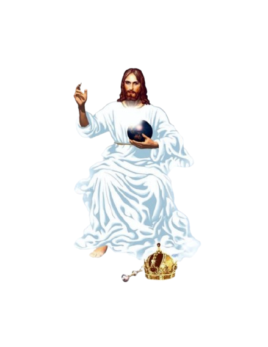
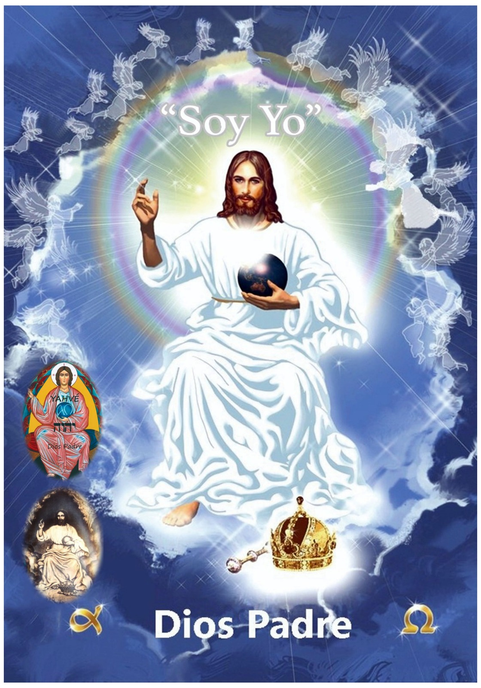

Revelación
El Padre le habla a sus hijos.
El mensaje del Padre fue una revelación privada a una religiosa de nombre Elisabetta Ravasio. Aquí encontrarás su historia.
Leer más
Material
Recursos e imágenes.
Encuentra material gráfico especializado en explicar el significado de la iconografía de la imagen de Dios Padre.
Leer más
Oraciones
¿Cómo rendirle un culto a Dios Padre?
Una manera de mejorar nuestra relación con aquel que nos creó, es por medio de oraciones. Descubre aquí varios formatos: día santo, semana de adoración, novena bíblica, el mes de Dios Padre, entre otros.
Leer más
Cantos
Alabanza y Glorificación
Una colección exclusiva de cantos de nuestra autoría dedicados a glorificar la primera persona de la Santísima Trinidad.
Leer más
Rosario
Guía de Recitación.
Descubre paso a paso cómo rezar el Rosario a Dios Padre, sus cinco misterios, las jaculatorias y las letanías con aprobación eclesiástica.
Leer más